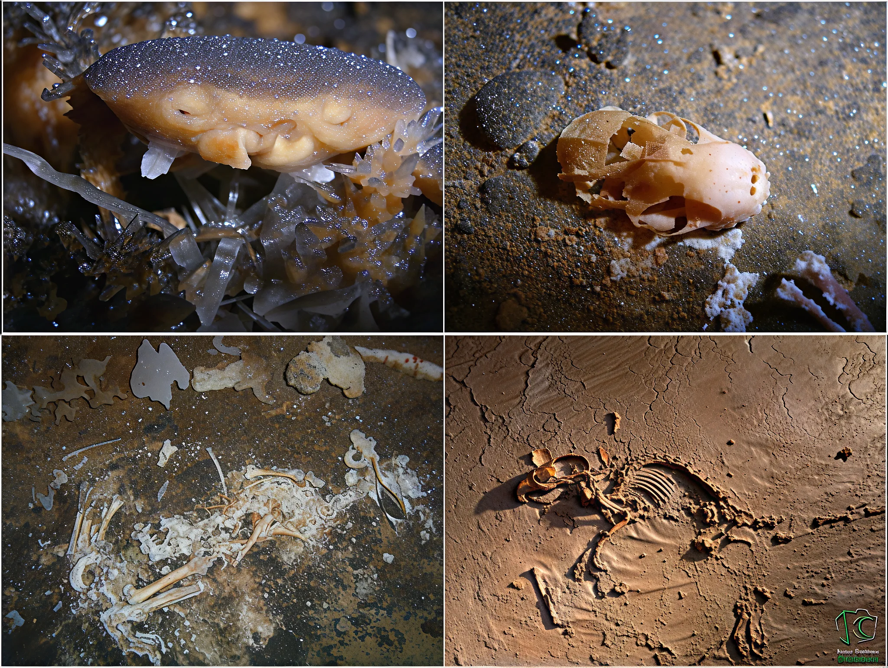
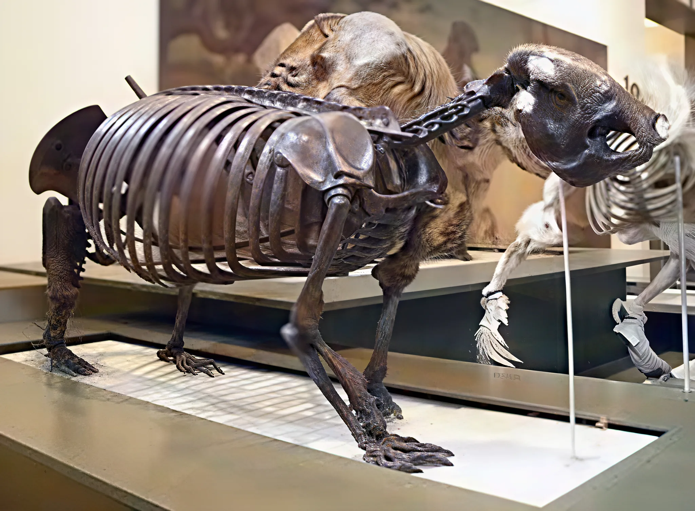
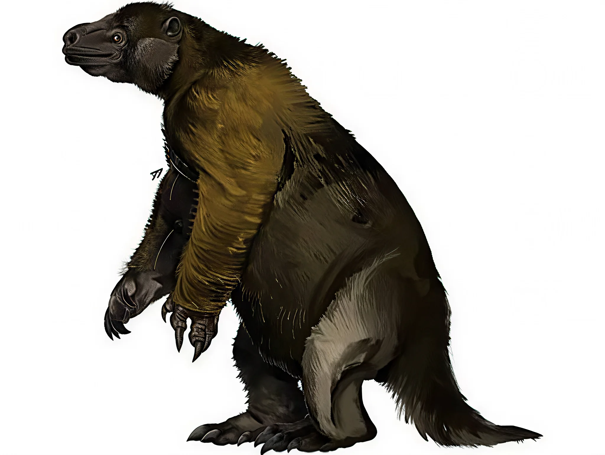
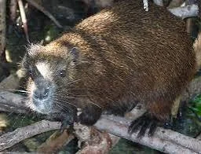

Yacimiento Paleontológico de Sierra Guasasa
Restos óseos de perezosos gigantes (Megalocnus rodens) y roedores extintos encontrados en los niveles superiores fosilizados del sistema kárstico. Este yacimiento es considerado uno de los más importantes de Cuba en megafauna del Cuaternario.
Megafauna Extinta
Los niveles superiores fosilizados de Sierra Guasasa preservan restos de animales gigantes que habitaron Cuba durante el Pleistoceno y Holoceno. Estos desdentados (Xenarthra) fueron los mamíferos terrestres más grandes de la isla.

Perezoso Gigante Cubano
Megalocnus rodens
El mayor mamífero terrestre que habitó Cuba. Este perezoso gigante podía alcanzar el tamaño de un oso actual, con garras poderosas y una complexión robusta adaptada a la vida arbórea y terrestre.
Características
- Peso estimado: 90-270 kg
- Período: Pleistoceno-Holoceno
- Dieta: Herbívoro (hojas, frutos)
- Extinción: hace ~4,700 años
- Hallazgos: Huesos largos, vértebras, cráneos

Perezoso de Brown
Parocnus browni
Otro perezoso gigante endémico de Cuba, más pequeño que Megalocnus pero igualmente impresionante. Sus restos óseos aparecen en múltiples cuevas de la Sierra de los Órganos.
Características
- Tamaño: menor que Megalocnus
- Período: Pleistoceno-Holoceno
- Dieta: Herbívoro
- Distribución: Pinar del Río
- Hallazgos: Postcráneo fragmentario

Roedores Gigantes
Geocapromys spp., Heteropsomys spp.
Grandes roedores extintos relacionados con las actuales jutías. Alcanzaban tamaños significativamente mayores que sus parientes modernos y habitaban las cuevas kársticas.
Características
- Tamaño: mucho mayor que jutías actuales
- Período: Pleistoceno-Holoceno
- Dieta: Herbívoro
- Hábitat: cuevas y zonas rocosas
- Hallazgos: mandíbulas, dientes, huesos largos
Los 12 Niveles Evolutivos
Sierra Guasasa presenta 12 niveles de cavernamiento que representan millones de años de evolución kárstica, desde el Oligoceno hasta el Holoceno. Cada nivel corresponde a un período geológico específico y alberga diferentes formaciones y fósiles.
Superficie fosilizada en las cimas del área. No presenta cuevas desarrolladas, solo procesos kársticos iniciales.
Cuevas Alta (335m) y Única (330m). Primeros sistemas kársticos significativos en altitudes elevadas.
Cuevas Gacha, Caracoles, Yisel, Ilusión y Provisional. Sistemas kársticos bien desarrollados con espeleotemas.
Cuevas Las Entradas, Guevara y La Huella. Período de intensa actividad kárstica con formación de galerías.
Cuevas La Piedra, Vista al Mar y El Olvido. Transición entre el Neógeno y el Cuaternario.
Cuevas El Panal y Buscada. Sistemas kársticos con evidencia de cursos de agua subterráneos.
Cuevas Cumpleaños, Bagdad y UJC. Período de máxima actividad kárstica en altitudes medias.
Cueva Geda I y II, El Mirador. Importante yacimiento paleontológico con restos de megafauna. Aquí habitaron los perezosos gigantes durante el último período glacial.
Cuevas El Engaño I y II. Sistemas con evidencia de ocupación por fauna extinta y moderna.
Cueva El Cable III. Sistemas kársticos activos con ríos subterráneos y formación de espeleotemas.
Cueva El Cable II. Período de transición hacia condiciones más modernas.
Cuevas El Cable I, La Paleta y El Chivo. Último nivel antes del nivel de base actual.
Cueva del Indio, Los Fósiles, El Sótano, La Fuente. Nivel actual activo con ríos subterráneos. Cueva Los Fósiles (99m snm) es el principal yacimiento paleontológico con restos de desdentados y roedores extintos.
Proceso de Fosilización
La fosilización en cuevas kársticas es un proceso excepcional que preserva restos orgánicos durante miles de años. Sierra Guasasa ofrece condiciones únicas para este proceso.
1. Muerte y Deposición
Los animales caen o se refugian en cuevas donde mueren. Los huesos quedan expuestos en el suelo de las galerías o son transportados por el agua.
2. Enterramiento Rápido
Sedimentos finos, guano de murciélagos y precipitados químicos cubren los huesos, protegiéndolos de la descomposición y carroñeros.
3. Mineralización
Las aguas ricas en minerales (calcio, sílice) infiltran los huesos, reemplazando gradualmente la materia orgánica por minerales.
4. Estabilidad Ambiental
Las cuevas mantienen temperatura (22.3°C) y humedad (99.7%) constantes, condiciones ideales para la preservación a largo plazo.
5. Protección
El sistema kárstico protege los fósiles de la erosión, el clima y la actividad biológica externa durante miles de años.
6. Descubrimiento
Los espeleólogos encuentran los fósiles al explorar galerías. La GEDA documenta y protege los yacimientos con cintas preventivas.
Metodología del GEDA
El Grupo Espeleológico y de Defensa Ambiental (GEDA) ha desarrollado protocolos rigurosos para el estudio y conservación de los fósiles de Sierra Guasasa.
Georreferenciación
Cada fósil encontrado es georreferenciado con GPS de alta precisión. Se registran coordenadas exactas, altitud y ubicación dentro de la cueva.
Documentación Fotográfica
Fotografía profesional con escalas de referencia. Se capturan múltiples ángulos y detalles diagnósticos de cada espécimen.
Delimitación Preventiva
Las zonas con fósiles son delimitadas con cintas de polietileno de colores (rojo = alto valor científico) para evitar daños accidentales.
Prohibición de Extracción
NO se extraen fósiles sin autorización del CITMA. Se documentan in situ para preservar el contexto estratigráfico y científico.
Equipo Mínimo
Regla de oro: mínimo 3 personas por expedición. Nunca entrar solo. Tres fuentes de luz independientes obligatorias.
Aviso a Rescate
Aviso obligatorio a la unidad de rescate local antes de ingresar a cuevas no turísticas, indicando número de personas y hora estimada de salida.
⚠️ Prohibición Legal de Extracción
Es ilegal extraer fósiles sin autorización del CITMA (Ministerio de Ciencia, Tecnología y Medio Ambiente). La extracción descontrolada destruye el contexto estratigráfico y científico, imposibilitando estudios paleontológicos futuros. Los fósiles son patrimonio nacional de Cuba y están protegidos por ley.
Amenazas al Yacimiento
El patrimonio paleontológico de Sierra Guasasa enfrenta múltiples amenazas que ponen en riesgo su preservación y estudio científico.
Falsos Espeleólogos
Personas sin formación científica llevan turistas a cuevas con alto valor paleontológico para beneficio económico personal, causando daños irreparables.
Extracción Desmedida
Coleccionistas extraen fósiles sin metodología científica, destruyendo el contexto estratigráfico y perdiendo información invaluable sobre el Pleistoceno cubano.
Vandalismo
Escrituras, pintura y basura en cuevas históricas. La Cueva El Cable presenta escrituras desde los años 60 y desperdicios de alimentos.
Deforestación
La tala hasta la pared de la sierra altera el equilibrio hídrico y aumenta la erosión, afectando la estabilidad de las cuevas y sus fósiles.
Contaminación Hídrica
Motores diesel y aceite de extracción de agua contaminan el Arroyo Zacarías y las aguas subterráneas que atraviesan las cuevas.
Diques en Cueva del Indio
Los diques de contención causan sedimentación acelerada que puede cubrir y dañar yacimientos paleontológicos en niveles inferiores.
🛡️ Acciones de Conservación del GEDA
El Grupo Espeleológico y de Defensa Ambiental realiza expediciones regulares de saneamiento, delimitación preventiva con cintas de colores, charlas educativas con comunidades locales y monitoreo del estado de conservación de los yacimientos paleontológicos.
📚 Importancia Científica
Los fósiles de Sierra Guasasa son cruciales para entender la evolución de la megafauna caribeña, los patrones de extinción del Pleistoceno-Holoceno y la biogeografía de las Antillas. Cada espécimen preservado es una ventana única al pasado de Cuba.